No-coding platform for creating websites of all kinds.Make it easy, with 450+ pre-defined layouts, created for you.
Create a
Site...
CREATE A WEBSITE
LOG IN
The easiest way to create a
website
Quick, easy and no-code
Choose a template
To create a website is one of the easiest things you can do!
With Microweber you can create your websites in just a few minutes.
Get Started
Designed For
Web Studios And Marketing Agencies
Speed Up Your Website Making Process.
Increase the speed of making websites
Choose from 450+ ready for use layouts and 75+ modules to help make your idea a reality.
Create A Website
Nick Woulters
Founder of a Web & Marketing Agency
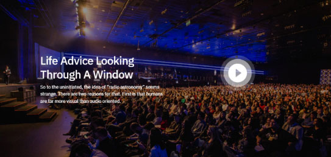
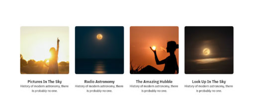
 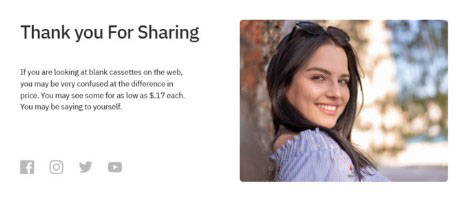
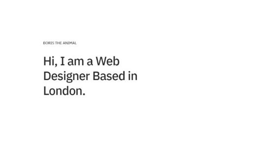
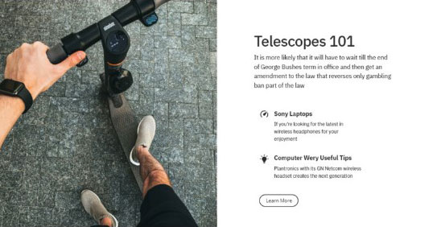
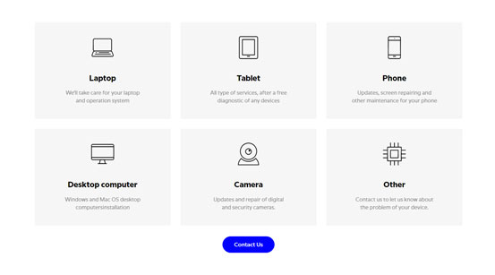
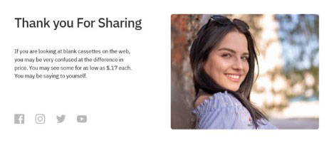
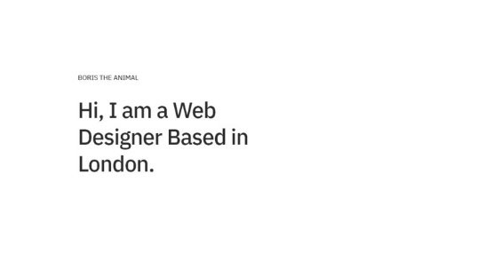
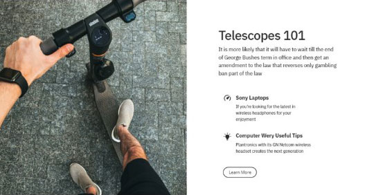
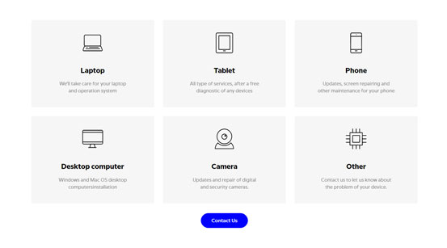
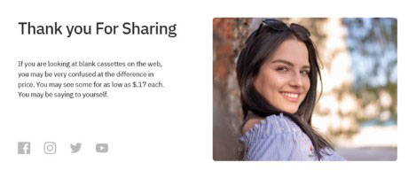
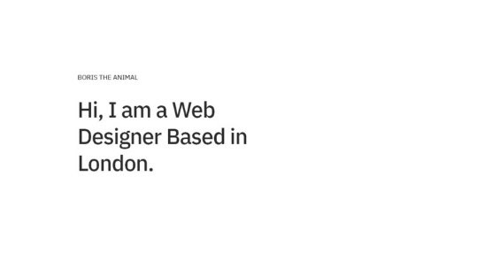
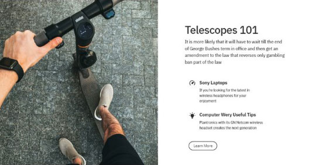
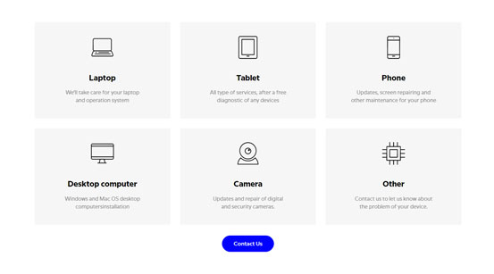